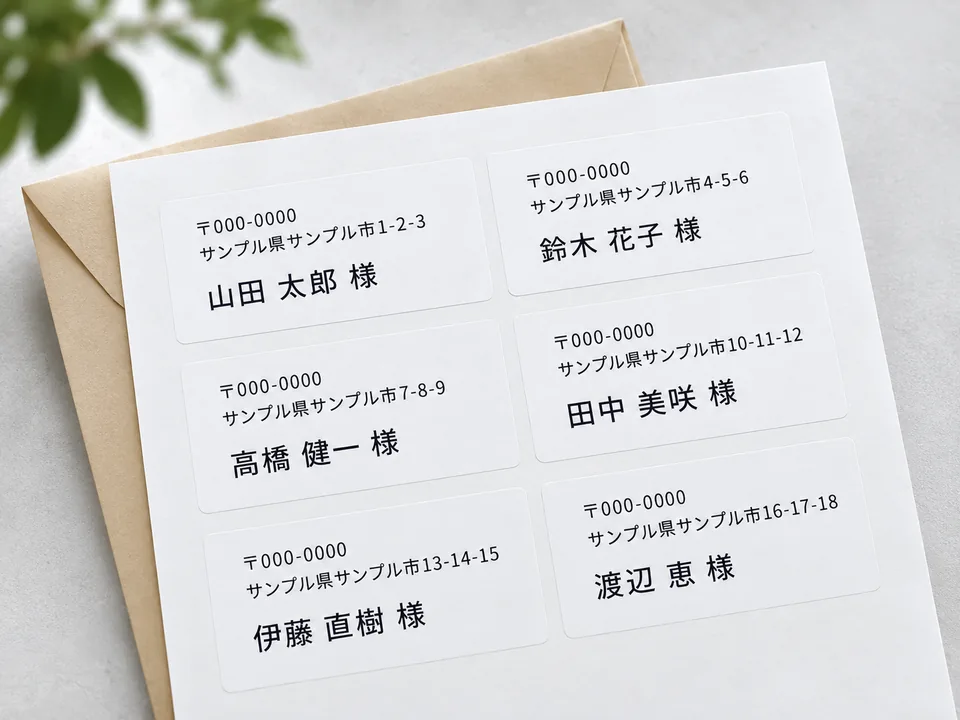
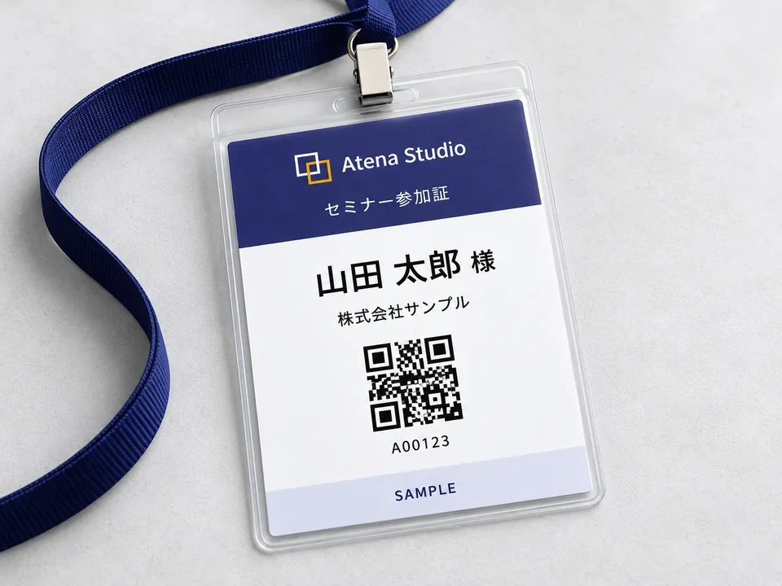
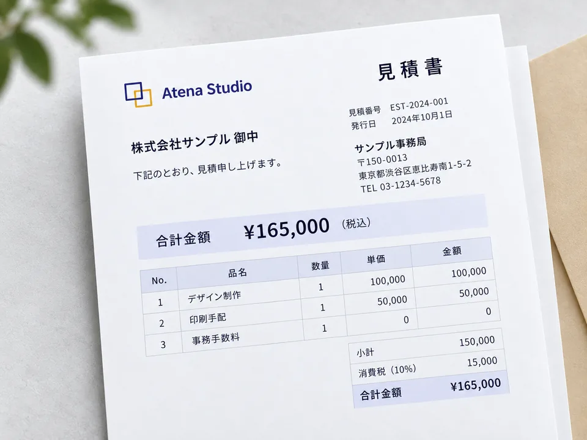

宛名ラベル、QRコード付き受講票、名札、会員証まで。
CSVを読み込むだけで、一人ひとり違う書類を一括生成します。ブラウザだけで完結し、データはどこにも送信されません。
主な機能
名簿の情報を、一人ひとりの書類に。

住所と氏名をまとめて差し込み

一人ひとりの名前やQRを反映

自社情報を入れて書類を作成
画像は利用イメージです。実際のアプリ画面とは異なります。
作りたい書類を選択。
CSVを読み込むか、表に直接入力。
氏名や住所、QRに使う項目を指定。
仕上がりを確認して、まとめてPDF化。
表への貼り付けにも対応。
文字やロゴをドラッグで配置。
レイアウトと自社情報を再利用。
テンプレートギャラリー（21種）：宛名ラベルから見積書まで、用途別のテンプレートから選べます。QRコードは要素の一つで、QRなしの用途にも対応します。
配色パレット：9色のブランドカラーから一括配色。ロゴをアップロードすると代表色を自動抽出し、候補として提示します。
書体の組み合わせ：「モダン」「フォーマル」「やわらか」など、見出し・本文の書体をまとめて変更できます。
ロゴ画像の自由配置：帳票要素の一つとしてロゴを好きな位置・サイズで配置できます。
拡大プレビューでの直接編集：ドラッグで移動、四隅ハンドルでリサイズ、テキストはダブルクリックでその場編集できます。ページ中央や他要素に近づくと自動で吸着するスマートガイド付きです。
取り消し・やり直し：配置や文字を間違えても、画面上のボタンやショートカットでいつでも戻せます。
マイテンプレート：自分で組んだレイアウトを名前を付けて保存し、次回から呼び出せます。
表への直接入力：CSVを用意しなくても、テンプレートに合わせた列・見本データ入りの表で名簿を作成できます。
見本CSVのダウンロード：選択中のテンプレートに必要な列とサンプル値入りのCSVをダウンロードできます。
自社情報の登録・差し込み：会社名・住所・連絡先・ロゴなどを登録しておくと、対応するテンプレートに自動で差し込まれます。
名簿の差分確認・復元：名簿を取り込むたびに前回との差分（追加・変更・削除）を確認し、過去の状態にも復元できます。
経理・取引書類：見積書・発注書・納品書・受領書・請求書・領収書の6種を収録。小計・消費税・合計まで再現しています。
PDF出力：位置とサイズを調整したら、CSVの件数分をまとめて一括でPDF生成します。
検品用CSV：「何ページ目に誰のデータを入れたか」の対応表を出力し、検品の手間を減らします。
UTMパラメータ付与：QRコードのリンク先にutm_source等を自動付与し、紙媒体からの反応も計測できます。
名簿があって、一人ひとりに違う紙を配る仕事なら、だいたい当てはまります。
読み込んだ名簿・ロゴ画像・生成した書類は、すべてブラウザ内（localStorage・IndexedDB）で処理・保存されます。ページの表示に必要なフォントやライブラリ（Tailwind CSS、PDF生成ライブラリ等）は外部CDNから読み込みますが、それ以外のデータがサーバーに送信されることはありません。
自社のテンプレートに合わせたい、複数人で名簿を共有したい、外部システムと連携したいなど、業務に合わせた個別カスタマイズのご相談を承っています。
カスタマイズのご相談はこちらから